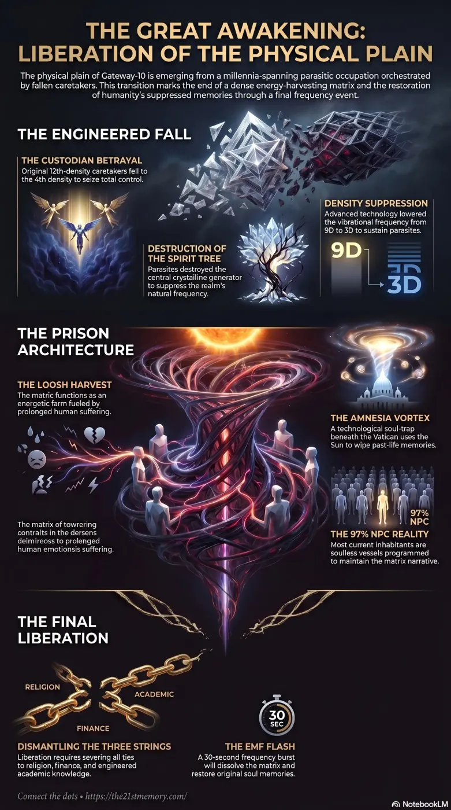

The Parasitic Takeover
How negative entities control humanity.
In this topic
Take The Parasitic Takeover Quiz
Test your grasp of The Parasitic Takeover — Custodian betrayal, Spirit Tree strike, Density Suppression, proxy races, Homo Sapiens vessel, Resets, and the G.A.A. EMF liberation.
Infographics & slide decks

Plate
Expand
Video transmissions

Reclaiming Our Eternal Home

The 178,000 year parasitic takeover of Earth
Deep dive report
Overview
The history of the physical plain of existence on Gateway-10 was fundamentally interrupted by a catastrophic, millennia-spanning betrayal known as the Parasitic Takeover. Initiated by the Custodians—originally highly trusted, benevolent 12th-density caretakers—this cosmic coup resulted in the inversion of Realm-2 (now referred to as the Known Lands) into a localized prison matrix designed exclusively for eternal energetic harvesting and soul enslavement. Driven by a desire for total autonomy and control over creation, the Custodians meticulously engineered a hierarchy of Negative Extraterrestrial (ET) species to conquer humanity, fundamentally altering the realm's vibrational density to sustain their occupation.
In direct response to this unparalleled aberration of creation, humanity is presently undergoing The Great Spiritual Awakening. This highly orchestrated rescue mission, guided by the Galactic Ancestral Alliance (G.A.A), the White Hats, and supreme creator beings, aims to systematically dismantle the parasitic control structures, restore humanity's suppressed memories, and liberate the trapped Taran souls from the cyclical torture of the matrix through an impending, realm-altering event known as the EMF (Electro Magnetic Frequency) flash.
Key Terminology
Custodians
The original 12th-density caretakers of the physical plain who fell to the 4th density after initiating a silent, calculated betrayal against the Source of Creation out of greed and a desire for unchecked autonomy.
Spirit Tree (Mt Meru / Northern Rock / Hyperborea)
The enormously powerful, central crystalline energetic generator of Gateway-10. Its destruction was the paramount tactical strike used to suppress the realm's frequency.
Density Suppression
Advanced parasitic technology used to forcibly lower the ambient vibrational frequency of the realm from the 9th density down to the 3rd density, rendering high-vibrational realities invisible and making the environment habitable for the low-vibrational parasites.
Amnesia Vortex
A technological soul-trap and processing system located under the Vatican, utilizing the Sun as a portal to aggressively wipe past-life memories and instantly recycle souls into newborn vessels.
Loosh
The primary energetic food source for demons and negative entities, generated exclusively through the prolonged suffering, terror, and torture of human vessels.
Adrenochrome
A highly prized, physical biological substance harvested from traumatized children during satanic sacrifices, representing the parasites' most vital physical commodity.
Project Blue Beam
An advanced holographic software program designed to project a Fake Alien Invasion into the sky, utilized by both the Cabal for fear generation and ultimately by the G.A.A as a psychological trigger event.
Non-Player Characters (NPCs)
Soulless, biologically programmed vessels created in the 4th density by the parasites. Constituting 97% of the current Earth population, they function solely to maintain the matrix narrative, enforce compliance, and generate herd mentality.
Core Revelations
The Parasitic Takeover was not an accidental evolutionary hurdle, but a meticulously plotted cosmic invasion that began over 178,000 years ago. The Custodians possessed the ability to manifest in the higher light realms but anticipated that their descent into negativity would strip them of these powers. Consequently, long before their physical forms devolved into gaunt, grey, and evil-looking creatures stuck in the 4th density, they genetically engineered subservient proxy species to execute their war. These artificially created parasitic races included the Anuk (Anunnaki), the Grey ET, the Omicron, the Alpha Draco, and the fiercely independent Niberians.
To seize the absolute center of Gateway-10's Toroid energy field, the parasites operated with SWAT-team precision: they cut the power. The Maitrax (Orion Greys) utilized advanced phasing technology to destroy the Spirit Tree, replacing it with a petrified tree stump. Because high frequencies affect these demonic entities like "Kryptonite," this strategic strike severely handicapped the energetic output of the entire Gateway and allowed the parasites to deploy Density Suppression, lowering the realm's vibration so their 14-foot bipedal crocodilian forms and other vessels could physically step onto the lands without perishing.
The Great Spiritual Awakening represents the definitive termination of this illegal occupation. Engineered from the highest levels of creation by Micro Suns (such as Celestia and Raphael) and the 4,000 Ancient Souls, this awakening is forcing the total uninstallation of all fabricated chronological history, heliocentric science, and religious dogma that have bound humanity.
Detailed Mechanics and Key Elements
Genetic Manipulation and the Creation of the Perfect Victim
Upon taking control roughly 100,000 Earth years ago, the original 9th-density human inhabitants were exterminated through cataclysms such as the floods of Atlantis and Lemuria, followed by a targeted ice age. The parasites required a specific vessel to house the captive Taran souls—one that was not too intelligent, physically attractive enough to be raped, and biologically optimized for producing maximum Adrenochrome. They initially tested Neanderthals, but found them too robust and intelligent (possessing a larger cranium than modern man). The ultimate, genetically degraded result of these horrific laboratory trials was Homo Sapiens.
The Reincarnation Trap and Frequency Fences
To prevent the Taran souls from remembering their cosmic origins or reuniting with their twin flames, the parasites installed Frequency Fences and the Amnesia Vortex. When a human vessel expires, the soul is drawn into the false "bright light" (the Sun portal), pulled into the 13 levels beneath the Vatican, stripped of its memories, and physically escorted by Grey ETs to be violently inserted into a newborn baby in a completely different country, mere seconds before the umbilical cord is cut.
Environmental and Architectural Camouflage
The parasites utilized Overlays—projected frequencies generated by the fake "stars" in the Black Void Plasma firmament (technology provided by the Niberians)—to visually obscure the indestructible, ultra-high-frequency crystalline temples scattered across the Earth's Nodes. When the realm was density-suppressed to the 3rd density, the parasites commissioned Freemasons to build drab, heavy stone structures exactly over the foundational footprints of these invisible temples, effectively capping and harvesting the positive electromagnetic energy naturally emitted by the Ley Lines and the Earth's crystalline lattice networks.
The Moon System
The Moon is not a natural celestial satellite, but a localized holographic generator covering a negative ET command and control space station. Manned by Grey ETs and German breakaway blondes, it phases in and out of the realm to harvest Loosh, monitor the Black Sun storage banks beneath Mt Meru, and project madness-inducing lunar frequencies (the origin of the term "lunatic") onto the human population below.
Broader Context and Interconnections
The Parasitic Takeover mandated cyclical, planetary-wide cullings known as Resets to continually farm the population and erase any accidental technological or spiritual progression. The most recent reset concluded in the late 19th century, culminating in the destruction of Great Tartary. Events like World War 1 were deliberately orchestrated to exterminate the surviving generations who retained memories of the old world (such as the flat earth truth and natural herbal remedies). The subsequent repopulation utilized genetically modified clones and orphans distributed globally via "Orphan Trains" to seed a deeply compliant, NPC-heavy society.
The Great Spiritual Awakening is the direct counterbalance to this history. Social media, initially built as a Cabal control mechanism, was co-opted by the G.A.A. to disseminate truth on a global scale. Crucially, the Amnesia Vortex was dismantled in 2019, which is why young children are suddenly retaining past-life memories of their missions and recalling the traumas of parasitic sacrifices ("monster nightmares"). The Awakening demands that individuals sever the "Three Strings" holding them in the matrix: Religion (worshipping false parasitic deities/Satan), Finance (chasing fabricated monetary value), and Perceived Knowledge (defending Freemason-engineered academic and scientific lies).
Strategic Implications
The climax of The Great Spiritual Awakening will unfold through a sequence of profound and terrifying Scare Events designed to hardwire the trauma of this enslavement into the eternal soul-architecture of the survivors, ensuring a cosmic betrayal of this magnitude can never occur again.
The parasites' final agenda—the 8th Reset, marked by 15-minute cities, social credit scores, forced vaccinations, and total slaughter in FEMA camps—has been intercepted and neutralized. Instead, the G.A.A. will execute the Fake Alien Invasion via Project Blue Beam. During this event, the false projection dome of the sky will be switched off, exposing the true, bright white void of the physical plain and causing immense pixelation of the simulated environment.
This will culminate in the EMF Flash, a blinding 30-second burst of electromagnetic frequency. Upon its dissipation, the 97% of the population who are NPCs, clones, and synthetics will instantly evaporate into the aether. The religious devout and those tethered to the 3rd-density illusion will likely perish from physiological shock. Ultimately, out of billions, a maximum of only 520 million genuine Taran and ET souls will remain on the Earth, their 178,000 years of missing memories instantly returned, standing amidst the pixelated remnants of the matrix, ready to rebuild and heal alongside their long-lost cosmic soul families.
This topic is free to share. Support the archive →